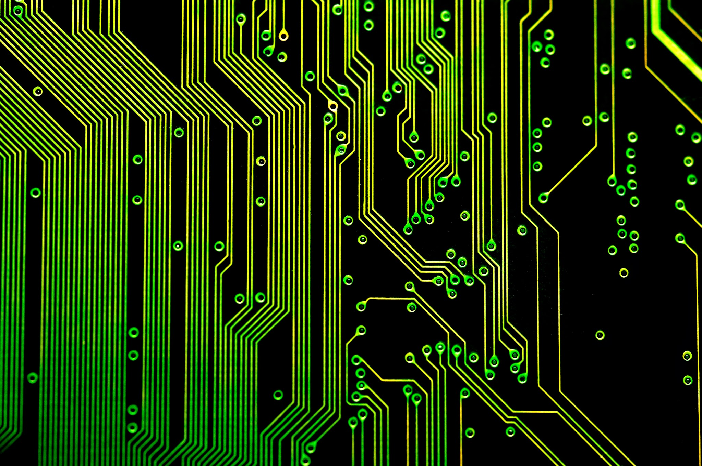

The Anatomy of a Computer
-
A motherboard (sometimes alternatively known as the mainboard, system board, planar board or logic board, or colloquially, a mobo) is the main printed circuit board (PCB) found in computers and other expandable systems. It holds many of the crucial electronic components of the system, such as the central processing unit (CPU) and memory, and provides connectors for other peripherals. Unlike a backplane, a motherboard contains significant sub-systems such as the processor and other components.
Motherboard specifically refers to a PCB with expansion capability and as the name suggests, this board is the "mother" of all components attached to it, which often include sound cards, video cards, network cards, hard drives, or other forms of persistent storage; TV tuner cards, cards providing extra USB or FireWire slots and a variety of other custom components (the term mainboard is applied to devices with a single board and no additional expansions or capability, such as controlling boards in televisions, washing machines and other embedded systems). -
A central processing unit (CPU) is the hardware within a computer that carries out the instructions of a computer program by performing the basic arithmetical, logical, and input/output operations of the system. The term has been in use in the computer industry at least since the early 1960s. The form, design, and implementation of CPUs have changed over the course of their history, but their fundamental operation remains much the same.
A computer can have more than one CPU; this is called multiprocessing. All modern CPUs are microprocessors, meaning contained on a single chip. Some integrated circuits (ICs) can contain multiple CPUs on a single chip; those ICs are called multi-core processors. An IC containing a CPU can also contain peripheral devices, and other components of a computer system; this is called a system on a chip (SoC).
Two typical components of a CPU are the arithmetic logic unit (ALU), which performs arithmetic and logical operations, and the control unit (CU), which extracts instructions from memory and decodes and executes them, calling on the ALU when necessary.
Not all computational systems rely on a central processing unit. An array processor or vector processor has multiple parallel computing elements, with no one unit considered the "center". In the distributed computing model, problems are solved by a distributed interconnected set of processors. -
A coprocessor is a computer processor used to supplement the functions of the primary processor (the CPU). Operations performed by the coprocessor may be floating point arithmetic, graphics, signal processing, string processing, encryption or I/O Interfacing with peripheral devices. By offloading processor-intensive tasks from the main processor, coprocessors can accelerate system performance. Coprocessors allow a line of computers to be customized, so that customers who do not need the extra performance need not pay for it.
-
 Alternatively referred to as main memory, primary memory, or system memory, Random Access Memory (RAM) is a computer storage location that allows information to be stored and accessed quickly from random locations within DRAM on a memory module. Because information is accessed randomly instead of sequentially like a CD or hard drive the computer can access the data much faster than it would if it was only reading the hard drive. However, unlike ROM and the hard drive RAM is a volatile memory and requires power in order to keep the data accessible, if power is lost all data contained in memory lost.
Alternatively referred to as main memory, primary memory, or system memory, Random Access Memory (RAM) is a computer storage location that allows information to be stored and accessed quickly from random locations within DRAM on a memory module. Because information is accessed randomly instead of sequentially like a CD or hard drive the computer can access the data much faster than it would if it was only reading the hard drive. However, unlike ROM and the hard drive RAM is a volatile memory and requires power in order to keep the data accessible, if power is lost all data contained in memory lost.
As the computer loads parts of the operating system and drivers are loaded into memory, which allows the CPU to process the instructions much faster and your computer to load faster. After the operating system has loaded, each program you open such as the browser you're using to view this page is loaded into memory while it is running. If too many programs are open the computer will swap the data in the memory between the RAM and the hard disk drive.
Over the evolution of computers there has been different variations of RAM used in computer. Some of the more common examples are DIMM, RIMM, SIMM, SO-DIMM, and SOO-RIMM. Below is an example image of a 512MB DIMM computer memory module and what the typical desktop computer memory card will look like. This memory module would be installed into memory slots on the motherboard. -
 Read-only memory (ROM) is a class of storage medium used in computers and other electronic devices. Data stored in ROM can only be modified slowly, with difficulty, or not at all, so it is mainly used to distribute firmware (software that is very closely tied to specific hardware, and unlikely to need frequent updates).
Read-only memory (ROM) is a class of storage medium used in computers and other electronic devices. Data stored in ROM can only be modified slowly, with difficulty, or not at all, so it is mainly used to distribute firmware (software that is very closely tied to specific hardware, and unlikely to need frequent updates).
Strictly, read-only memory refers to memory that is hard-wired, such as diode matrix and the later mask ROM. Although discrete circuits can be altered (in principle), ICs cannot and are useless if the data is bad. The fact that such memory can never be changed is a large drawback; more recently, ROM commonly refers to memory that is read-only in normal operation, while reserving the fact of some possible way to change it.
Other types of non-volatile memory such as erasable programmable read only memory (EPROM) and electrically erasable programmable read-only memory (EEPROM or Flash ROM) are sometimes referred to, in an abbreviated way, as "read-only memory" (ROM); although these types of memory can be erased and re-programmed multiple times, writing to this memory takes longer and may require different procedures than reading the memory. When used in this less precise way, "ROM" indicates a non-volatile memory which serves functions typically provided by mask ROM, such as storage of program code and nonvolatile data. -
 Alternatively referred to as a hard disk drive and abbreviated as HD or HDD, the hard drive is the computer's main storage media device that permanently stores all data on the computer. The hard drive was first introduced on September 13, 1956 and consists of one or more hard drive platters inside of an air sealed casing. Most computer hard drives are in an internal drive bay at the front of the computer and connect to the motherboard using either an ATA, SCSI, or SATA cable and power cable. Below is a picture of what the inside of a hard drive looks like for a desktop and laptop hard drive.
Alternatively referred to as a hard disk drive and abbreviated as HD or HDD, the hard drive is the computer's main storage media device that permanently stores all data on the computer. The hard drive was first introduced on September 13, 1956 and consists of one or more hard drive platters inside of an air sealed casing. Most computer hard drives are in an internal drive bay at the front of the computer and connect to the motherboard using either an ATA, SCSI, or SATA cable and power cable. Below is a picture of what the inside of a hard drive looks like for a desktop and laptop hard drive.
 Solid State Drives (SSDs) are starting to replace hard disk drives (HDDs) in many computers because of the clear advantages these drives have over HDD. While SSD is becoming more and more popular, HDD will continue to be in desktop computers with SSD because of the available capacity HDD offers over SSD.
Solid State Drives (SSDs) are starting to replace hard disk drives (HDDs) in many computers because of the clear advantages these drives have over HDD. While SSD is becoming more and more popular, HDD will continue to be in desktop computers with SSD because of the available capacity HDD offers over SSD.
-
The controller card, or simply "controller," is a piece of hardware that acts as the interface between the motherboard and the other components of the computer. For example, hard drives, optical drives, printers, keyboards, and mice all require controllers to work. Most computers have all the necessary controllers built in the motherboard as chips, not full-sized cards. However, if you add additional components such as a SCSI hard drive, you may need to add a controller card as well. Controller cards are typically installed in one of the computer's PCI slots.
-
A video card (also called a video adapter, display card, graphics card, graphics board, display adapter, graphics adapter or frame buffer[1] and sometimes preceded by the word discrete or dedicated to emphasize the distinction between this implementation and integrated graphics) is an expansion card which generates a feed of output images to a display (such as a computer monitor). Within the industry, video cards are sometimes called graphics add-in-boards, abbreviated as AIBs, with the word "graphics" usually omitted.
-
A power supply unit (PSU) converts mains AC to low-voltage regulated DC power for the internal components of a computer. Modern personal computers universally use a switched-mode power supply. Some power supplies have a manual selector for input voltage, while others automatically adapt to the supply voltage.
Most modern desktop personal computer power supplies conform to the ATX specification, which includes form factor and voltage tolerances. While an ATX power supply is connected to the mains supply, it always provides a 5 V standby (5VSB) voltage so that the standby functions on the computer and certain peripherals are powered. ATX power supplies are turned on and off by a signal from the motherboard. They also provide a signal to the motherboard to indicate when the DC voltages are in spec, so that the computer is able to safely power up and boot. The most recent ATX PSU standard is version 2.31 of mid-2008. -
 Alternatively referred to as a bus slot or expansion port, an expansion slot is an opening located inside a computer on the motherboard or riser board that allows additional boards to be connected to it. For example, if you wanted to install a new video card in the computer you'd purchase a video expansion card and install that card into the compatible expansion slot. Below is a listing of some of the expansion slots commonly found in IBM compatible computers as well as other brands of computers and the devices commonly associated with those slots. Clicking on any of the links below give you additional details about each expansion slot.
Alternatively referred to as a bus slot or expansion port, an expansion slot is an opening located inside a computer on the motherboard or riser board that allows additional boards to be connected to it. For example, if you wanted to install a new video card in the computer you'd purchase a video expansion card and install that card into the compatible expansion slot. Below is a listing of some of the expansion slots commonly found in IBM compatible computers as well as other brands of computers and the devices commonly associated with those slots. Clicking on any of the links below give you additional details about each expansion slot.
-
 When referring to a computer, the bus also known as the address bus, data bus, or local bus is a data connection between two or more devices connected to the computer. For example, a bus enables a computer processor to communicate with the memory or a video card to communicate with the memory.
The bus contains multiple wires (signal lines) that contain addressing information that describes the memory location of where the data is being sent or where it is being retrieved. Each wire in the bus carries a single bit of information, which means the more wires a bus has the more information it can address. For example, a computer with a 32-bit address bus can address 4GB of memory, and a computer with a 36-bit bus can address 64GB of memory.
A bus is capable of being a parallel or serial bus and today all computers utilize two bus types, an internal bus or local bus and an external bus, also called the expansion bus. An internal bus enables a communication between internal components such as a computer video card and memory and an external bus is capable of communicating with external components such as a USB or SCSI device.
A computer or device's bus speed is listed as a MHz, e.g. 100MHz FSB. The throughput of a bus is measured in bits per second or megabytes per second. -
Alternatively referred to as I/O address, I/O ports, and I/O port address, the input/output port is what allows the software drivers to communicate with hardware devices on your computer. In your computer there are 65,535 ports that are numbered from 0000h to FFFFh. The I/O port assignment can be made either manually using DIP switches or automatically using PnP. When configuring the I/O port of any device in your computer, it is important that it does not share the same I/O port as another device or you will encounter a hardware conflict.
{kind=link}
{kind=link}
{kind=link}
{kind=link}
{kind=link}
{kind=link}
{kind=link}
{kind=link}